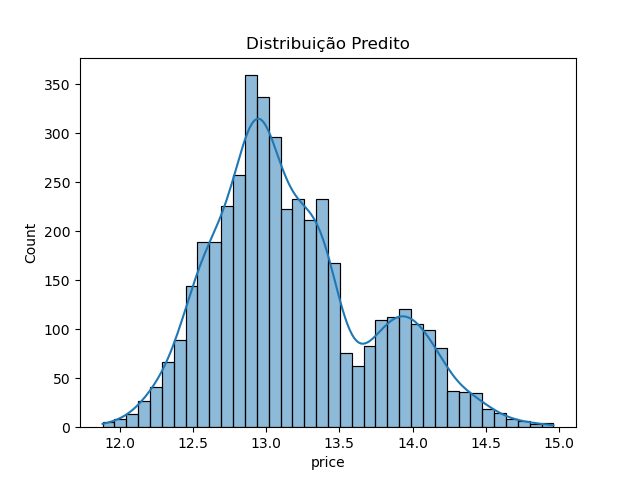

Acompanhamento do modelo diário - 2024-11-13
| Message | Variable | Datetime | |
|---|---|---|---|
| 0 | KEY_DUPLICATION | ['id'] | 2024-11-13 22:16:21.355350 |
| 1 | 19678 CASES OUT OF BOUNDS | quartos | 2024-11-13 22:16:21.356350 |
| 2 | NULL_TOLERANCE | area_total | 2024-11-13 22:16:21.357350 |
| 3 | KEY_DUPLICATION | ['id'] | 2024-11-13 22:18:51.355598 |
| 4 | NULL_TOLERANCE | area_total | 2024-11-13 22:18:54.194668 |
| 5 | 19678 CASES OUT OF BOUNDS | quartos | 2024-11-13 22:19:56.030827 |